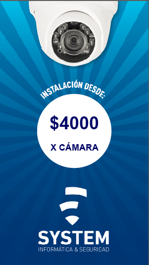
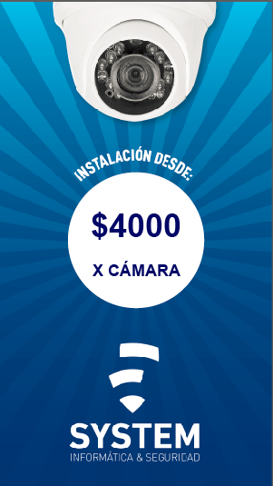

SERVICIOS
Esta es solo una placa ilustrativa de los servicios más demandados, también reemplazamos y reparamos
pantallas, teclados, carcasas, jack de carga, flex, fuentes de poder, cargadores de todas las marcas,
detección de fallas en placas madres, memorias y discos HDD y SDD y todo tipo de problemas que surjan en
tu notebook o pc de escritorio.
Por otra parte también brindamos soporte en el área de conectividad a internet, siempre que el problema
no provenga de la empresa proveedora del servicio contratado.
Instalación de cámaras de seguridad
 

Información y consejos útiles
Aquí encontrarás toda clase de tips y consejos para mantener en buen estado tu computadora y así evitar daños mayores en cualquiera de sus componentes, incluyendo tanto al hardware como al software.
Mantenimiento preventivo
El propósito de realizar el mantenimiento preventivo es anticiparse a posibles y potenciales fallas en
los equipos de cómputo antes de que éstas ocurran, a la vez que ayuda a ahorrar tiempo y dinero,
haciendo que las actividades diarias sean más productivas.
La clave del mantenimiento preventivo de computadoras es que debe realizarse periódicamente tanto para
el hardware como para el software, preservando el desempeño y fiabilidad de programas y el correcto
funcionamiento de todos los componentes físicos.
Protección antivirus
Te presentamos una tabla con las características, ventajas y desventajas de algunos de los mejores antivirus que te ofrece el mercado para mantener tu computadora protegida contra las amenazas. Con el paso del tiempo, los antivirus han evolucionado hacia programas más avanzados que además de buscar y detectar virus informáticos consiguen bloquearlos, desinfectar archivos y prevenir una infección de estos. Actualmente son capaces de reconocer otros tipos de malware, como spyware, gusanos, troyanos, rootkits y pseudovirus.
| ANTIVIRUS | PROTECCIÓN | DESVENTAJAS |
| Norton | Correo, nube, elimina spyware, malware y adware |
-Ralentización -Difícil desinstalación |
| Panda | VPN para navegación segura, bloqueo de páginas no seguras |
-Interfaz estorbado -Afecta el rendimiento óptimo del equipo |
| Avira | Escaneo de malware en tiempo real |
-Ralentiza el equipo -Navegación por el menú poco clara |